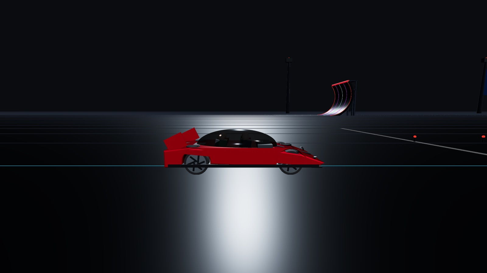

- D1–D4 四隅の下向き噴射 ×4浮上・ロール・ピッチ・着地の減速
- R1–R4 ジェットナセルの後方噴射 ×4ブースト加速
- FL / FR 向きを変えられる前方噴射 ×2逆噴射ブレーキと空中での向き変え。横向き・下向きの角度を設定可能
10 基の噴射口は、それぞれの取付位置から力を加えます。左右の推力差でロール、前後の差でピッチが生まれるので、片側だけを強く噴けば車体は回り始めます。噴射口ごとに最大推力を設定でき、不揃いにすれば車体の傾きとして現れます。
- 噴射口ごとの出力設定
- 圧縮空気 250 kg
- 床下吸引ファン